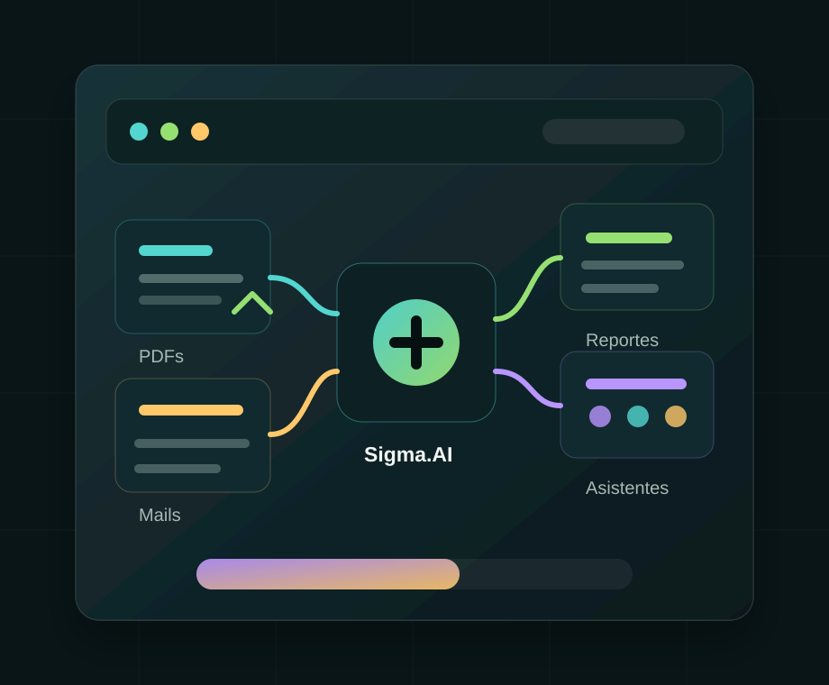

Procesos repetitivos
Cargas manuales, copias entre sistemas y controles que consumen horas todas las semanas.
Consultoria IA para PYMEs
Ayudamos a PYMEs a aprovechar sus datos con soluciones simples, medibles y pensadas para problemas reales de la operacion diaria.
Diagnostico inicial para identificar oportunidades concretas de IA en tu empresa.

Problemas frecuentes
Cargas manuales, copias entre sistemas y controles que consumen horas todas las semanas.
PDFs, mails, Excel y carpetas que hacen dificil encontrar una respuesta confiable a tiempo.
Consultas frecuentes que se repiten y equipos que responden lo mismo una y otra vez.
Indicadores que llegan tarde porque dependen de consolidaciones manuales y validaciones extensas.
Interes en aplicar IA sin gastar como una gran empresa ni embarcarse en proyectos eternos.
Servicios
Como trabajamos
Entendemos tus procesos, dolores y objetivos de negocio.
Detectamos oportunidades y priorizamos las que conviene atacar primero.
Validamos valor con una version funcional antes de escalar.
Integramos la solucion con tus herramientas y rutinas actuales.
Medimos, ajustamos y ampliamos lo que funciona.
Diferencia
Soluciones pensadas para PYMEs.
Implementaciones simples y medibles.
Sin proyectos eternos.
Sin costos de gran consultora.
Foco en casos de uso concretos.
Casos de uso
Extraccion automatica de datos desde facturas y comprobantes.
Asistente para responder consultas frecuentes de clientes y prospectos.
Busqueda inteligente sobre documentacion tecnica y procedimientos internos.
Reportes automaticos de ventas, margen e inventario.
Analisis y clasificacion inicial de CVs para acelerar la preseleccion.
Consulta inicial
En una primera conversacion analizamos tus procesos y detectamos oportunidades concretas.